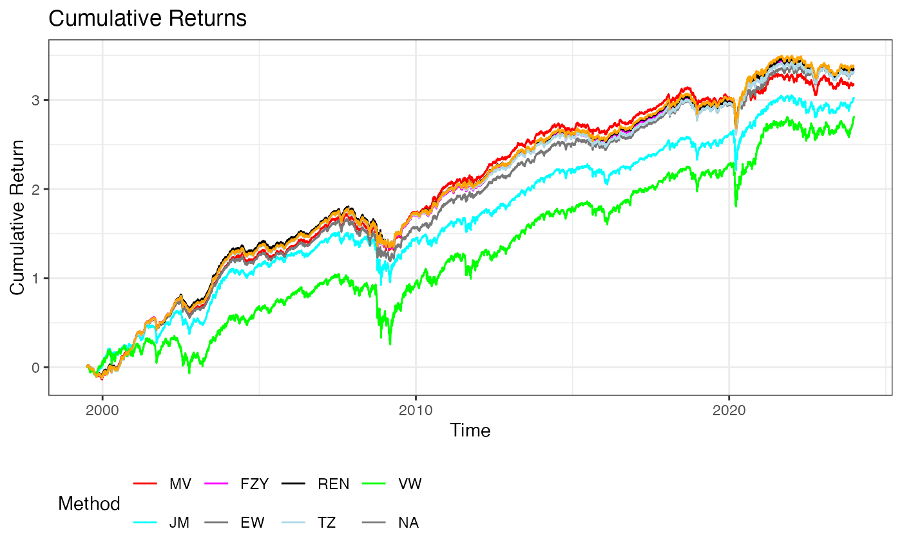

REN.Rmd
library(REN)The REN package provides tools for robust portfolio optimization using regularization techniques and ensemble learning methods. It is designed to generate stable out-of-sample return predictions, particularly in the presence of strong correlations among assets. The package includes functions for data preparation, parallel processing, and portfolio analysis using various methods like Mean-Variance, James-Stein, LASSO, Ridge Regression, and Equal Weighting.
This vignette will walk you through the main functionalities of the REN package, demonstrating how to set up the environment, prepare data, and perform portfolio optimization.
You can install the development version of the REN package from GitHub:
devtools::install_github("bonsook/REN")The REN package leverages parallel processing to speed up
computation, especially when dealing with large datasets or complex
models. Use the setup_parallel function to set up parallel
processing.
# Set up parallel processing with the default number of cores or choose a specific number
cl <- setup_parallel()
#> Loading required package: Matrix
#> Loaded glmnet 4.1-8
#> Loading required package: foreach
#> Loading required package: iterators
#> Loading required package: parallel
#>
#> Attaching package: 'lubridate'
#> The following objects are masked from 'package:base':
#>
#> date, intersect, setdiff, union
#> Enter the number of cores to use (default is 7):The prepare_data function is designed to help you
structure your input data appropriately for portfolio optimization. This
function handles various preprocessing steps, making it easier to
analyze the data using the REN package.
Suppose you have a data frame your_data with asset
returns:
# Load the dataset (replace with your actual data path)
ff25 <- read.csv("data/FF25.csv")
# Define the date column index, start date, and end date
date_column_index <- 1 # Update this based on your data
start_date <- "19990101" # Adjust as needed
end_date <- "20231231" # Adjust as needed
# Prepare the data for analysis
data_prep <- prepare_data(ff25, date_column_index, start_date, end_date)
x <- data_prep$x
mon <- data_prep$mon
count <- data_prep$count
Date <- data_prep$DateThe prepare_data function processes your data, making it
ready for portfolio optimization.
The core function of the REN package is
perform_analysis, which performs portfolio optimization
using multiple methods, including Mean-Variance (MV), James-Stein (JM),
LASSO, Ridge Regression, and Equal Weighting (EW). The function
calculates various performance metrics such as turnover, Sharpe ratio,
volatility, and maximum drawdown.
Let’s perform portfolio analysis on the prepared data:
#> [1] 1
#> [1] 2
#> [1] 3
#> [1] 4
#> [1] 5
#> [1] 6
#> [1] 7
#> [1] 8
#> [1] 9
#> [1] 10
#> [1] 11
#> [1] 12
#> [1] 13
#> [1] 14
#> [1] 15
#> [1] 16
#> [1] 17
#> [1] 18
#> [1] 19
#> [1] 20
#> [1] 21
#> [1] 22
#> [1] 23
#> [1] 24
#> [1] 25
#> [1] 26
#> [1] 27
#> [1] 28
#> [1] 29
#> [1] 30
#> [1] 31
#> [1] 32
#> [1] 33
#> [1] 34
#> [1] 35
#> [1] 36
#> [1] 37
#> [1] 38
#> [1] 39
#> [1] 40
#> [1] 41
#> [1] 42
#> [1] 43
#> [1] 44
#> [1] 45
#> [1] 46
#> [1] 47
#> [1] 48
#> [1] 49
#> [1] 50
#> [1] 51
#> [1] 52
#> [1] 53
#> [1] 54
#> [1] 55
#> [1] 56
#> [1] 57
#> [1] 58
#> [1] 59
#> [1] 60
#> [1] 61
#> [1] 62
#> [1] 63
#> [1] 64
#> [1] 65
#> [1] 66
#> [1] 67
#> [1] 68
#> [1] 69
#> [1] 70
#> [1] 71
#> [1] 72
#> [1] 73
#> [1] 74
#> [1] 75
#> [1] 76
#> [1] 77
#> [1] 78
#> [1] 79
#> [1] 80
#> [1] 81
#> [1] 82
#> [1] 83
#> [1] 84
#> [1] 85
#> [1] 86
#> [1] 87
#> [1] 88
#> [1] 89
#> [1] 90
#> [1] 91
#> [1] 92
#> [1] 93
#> [1] 94
#> [1] 95
#> [1] 96
#> [1] 97
#> [1] 98
#> [1] 99
#> [1] 100
#> [1] 101
#> [1] 102
#> [1] 103
#> [1] 104
#> [1] 105
#> [1] 106
#> [1] 107
#> [1] 108
#> [1] 109
#> [1] 110
#> [1] 111
#> [1] 112
#> [1] 113
#> [1] 114
#> [1] 115
#> [1] 116
#> [1] 117
#> [1] 118
#> [1] 119
#> [1] 120
#> [1] 121
#> [1] 122
#> [1] 123
#> [1] 124
#> [1] 125
#> [1] 126
#> [1] 127
#> [1] 128
#> [1] 129
#> [1] 130
#> [1] 131
#> [1] 132
#> [1] 133
#> [1] 134
#> [1] 135
#> [1] 136
#> [1] 137
#> [1] 138
#> [1] 139
#> [1] 140
#> [1] 141
#> [1] 142
#> [1] 143
#> [1] 144
#> [1] 145
#> [1] 146
#> [1] 147
#> [1] 148
#> [1] 149
#> [1] 150
#> [1] 151
#> [1] 152
#> [1] 153
#> [1] 154
#> [1] 155
#> [1] 156
#> [1] 157
#> [1] 158
#> [1] 159
#> [1] 160
#> [1] 161
#> [1] 162
#> [1] 163
#> [1] 164
#> [1] 165
#> [1] 166
#> [1] 167
#> [1] 168
#> [1] 169
#> [1] 170
#> [1] 171
#> [1] 172
#> [1] 173
#> [1] 174
#> [1] 175
#> [1] 176
#> [1] 177
#> [1] 178
#> [1] 179
#> [1] 180
#> [1] 181
#> [1] 182
#> [1] 183
#> [1] 184
#> [1] 185
#> [1] 186
#> [1] 187
#> [1] 188
#> [1] 189
#> [1] 190
#> [1] 191
#> [1] 192
#> [1] 193
#> [1] 194
#> [1] 195
#> [1] 196
#> [1] 197
#> [1] 198
#> [1] 199
#> [1] 200
#> [1] 201
#> [1] 202
#> [1] 203
#> [1] 204
#> [1] 205
#> [1] 206
#> [1] 207
#> [1] 208
#> [1] 209
#> [1] 210
#> [1] 211
#> [1] 212
#> [1] 213
#> [1] 214
#> [1] 215
#> [1] 216
#> [1] 217
#> [1] 218
#> [1] 219
#> [1] 220
#> [1] 221
#> [1] 222
#> [1] 223
#> [1] 224
#> [1] 225
#> [1] 226
#> [1] 227
#> [1] 228
#> [1] 229
#> [1] 230
#> [1] 231
#> [1] 232
#> [1] 233
#> [1] 234
#> [1] 235
#> [1] 236
#> [1] 237
#> [1] 238
#> [1] 239
#> [1] 240
#> [1] 241
#> [1] 242
#> [1] 243
#> [1] 244
#> [1] 245
#> [1] 246
#> [1] 247
#> [1] 248
#> [1] 249
#> [1] 250
#> [1] 251
#> [1] 252
#> [1] 253
#> [1] 254
#> [1] 255
#> [1] 256
#> [1] 257
#> [1] 258
#> [1] 259
#> [1] 260
#> [1] 261
#> [1] 262
#> [1] 263
#> [1] 264
#> [1] 265
#> [1] 266
#> [1] 267
#> [1] 268
#> [1] 269
#> [1] 270
#> [1] 271
#> [1] 272
#> [1] 273
#> [1] 274
#> [1] 275
#> [1] 276
#> [1] 277
#> [1] 278
#> [1] 279
#> [1] 280
#> [1] 281
#> [1] 282
#> [1] 283
#> [1] 284
#> [1] 285
#> [1] 286
#> [1] 287
#> [1] 288
#> [1] 289
#> [1] 290
#> [1] 291
#> [1] 292
#> [1] 293
#> [1] 294
#> total: 2362.191 sec elapsed
Once you’re done with the parallel computation, remember to stop the cluster to free up resources:
# Stop the parallel cluster
stopCluster(cl)The REN package provides a comprehensive set of tools for robust portfolio optimization using regularization and ensemble learning methods. By following the steps outlined in this vignette, you can effectively set up your environment, prepare your data, and perform in-depth portfolio analysis.
For further information, please refer to the package documentation or explore the examples provided in this vignette.